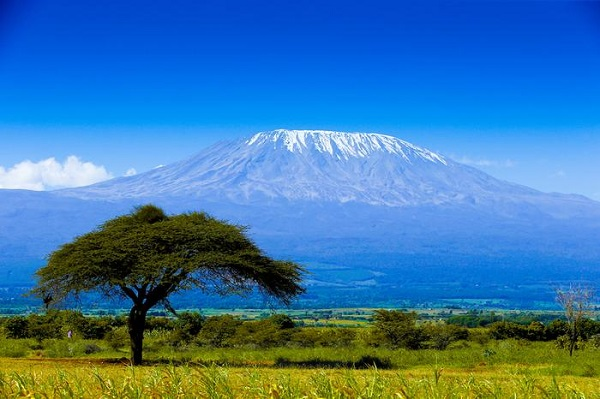

Góry świata
Azja
Himalaje
Himalaje to najwyższy łańcuch górski na ziemi, swoim obszarem zachacza Pakistan, Indnie, Nepal, Brutan, Chiny oraz Mjanme.Znajduje się w nim 10 z 14 szczytów powyżej 8000 m n.p.m. świata. Leżą one w Himalajach Wysokich. To tam właśnie znajduje się Mount Everest, czyli najwyższa góra na Ziemi.
źródło
Ameryka Południowa
Andy
Andy to najdłuższy łańcuch górski na Ziemi. Ciągnie się on od Morza Karaibskiego aż do Ziemi Ognistej i ma ponad 9 000 kilometrów!źródło
Ameryka Północna
Alaska
Nie trudno zgadnąć, że to pasmo znajduje się na Alasce. Jego najwyższy szczyt Denali wyróżnia się dużą wybitnością. Ma on 6190 m n.p.m. wysokości i przy tym aż 6138 m wybitności.źródło
Afryka
Kilimandżaro
Masyw Kilimandżaro wyróżnia się na tle całego kontynenty a to za sprawą leżącego przez cały rok na szczycie śniegu. Podobnie jak Denali charakteryzuje się dużą wybitnością 5885m przy wysokości większej o zaledwie 10 metrów.
źródło
Australia
Góry Śnieżne
Góry Śnieżne należą do pasma Alp Austrailjskich i są najwyższym pasmem na tym kontynencie.Ciekawostką jest fakt, że najwyższy szczyt Australii nosi nazwę "Góra Kościuszki". Jest tak dlatego, że odkrył i nazwał ją jej pierwszy zdobywca Paweł Edmund Strzelecki w 1840 roku.
źródło
Antarktyda
Góry Ellswortha
Najwyższym szczytem tego mroźnego kontynentu jest Masyw Vinsona (4892 m n.p.m.) nazwany tak w celu upamiętnienia amerykańskiego polityka Carla Vinsona wspierającego eksplorację Antarktydy.źródło